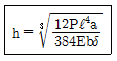
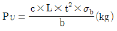
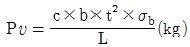
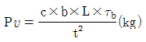
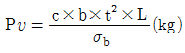

사출(프레스)금형설계기사 (2005-05-29 기출문제)
1과목: 금형설계
1. 이젝터 핀 설계시 고려할 사항이 아닌 것은?
- 성형품의 이형저항 밸런스가 유지되도록 한다.
- 게이트의 하부 및 게이트와 직선 방향의 밑 부분에 설치하지 않는다.
- 공기 및 가스가 모이는 곳에 설치하여 에어벤트 대용으로 사용한다.
- 핀의 끝과 성형품은 될 수 있는 데로 적게 접촉하도록 한다.
(정답률: 82%)

2. 성형불량 원인중 크레이징 현상이 나타나는 요인이 아닌 것은?
- 사출압력이 너무 높다.
- 금형온도가 높다.
- 수지온도가 낮다.
- 유동성이 부족하다.
(정답률: 61%)
3. 핀 포이트 게이트를 적용하는 금형구조에서 러너 스트리퍼판과 스프루 부시는 열림과 결합이 반복된다. 결합되는 부분의 스프루 부시 구배각은 얼마가 좋은가?
- 1°∼ 5°
- 5°∼ 15°
- 8°∼ 25°
- 20°∼ 35°
(정답률: 58%)
4. 러너리스 성형의 특징과 거리가 먼 것은?
- 모든 수지에 적합한 성형법이다.
- 금형설계 및 보수에 고도의 기술이 필요하다.
- 성형품의 생산시간을 단축할 수 있다.
- 성형품의 재료비 및 품질을 향상시킬 수 있다.
(정답률: 90%)
5. 직사각형 캐비티로서 바닥이 일체가 아닌 경우 캐비티의 측벽에 대한 강도 계산식은 다음과 같다. 계산식 중 a 및 b가 뜻하는 바는 다음 중 어느 것인가?

- 캐비티의 폭 및 캐비티 형판 높이
- 캐비티의 깊이 및 캐비티 형판 높이
- 캐비티의 형판높이 및 캐비티의 폭
- 캐비티의 형판높이 및 캐비티의 깊이
(정답률: 54%)
6. 금형제작을 계획할 때는 적당한 용량의 사출 성형기를 미리 선정해야 한다. 다음중 사출 성형기를 선택할 때의 고려할 사항중 가장 관계가 먼 것은?
- 제품의 높이
- 제품의 투영면적
- 제품의 중량
- 제품의 정밀도
(정답률: 72%)
7. 도그 레그 캠(dog leg cam)에서 캠의 경사부 길이가 40㎜이고 경사각이 15℃이며 틈새가 1.5㎜일 때 캠의 직선부 길이가 50㎜이고 구멍 직선부 길이가 20㎜이라면 슬라이드 블록의 이동거리(M)와 지연량(D)은 얼마인가?
- M = 4.46㎜, D = 25.12㎜
- M = 8.14㎜, D = 30.15㎜
- M = 9.22㎜, D = 35.60㎜
- M = 12.45㎜, D = 40.56㎜
(정답률: 38%)
8. 다음 중 열경화성 수지는?
- 페놀수지
- ABS 수지
- 폴리아세탈
- PMMA 수지
(정답률: 72%)
9. 다음 게이트의 절단 방식중 자동절단이 가능한 게이트는?
- Side gate
- Tunnel gate
- Flash gate
- Disk gate
(정답률: 82%)
10. 다음은 사출성형기의 직압식형체(型締) 방식이 토글식(toggle type) 형체보다 유리한 점을 적은 것이다. 이중에서 틀린 것은?
- 일반적으로 작동속도가 빠르다.
- 금형취부가 용이하다.
- 형체력의 조절이 용이하다.
- 일반적으로 스트로우크가 크다.
(정답률: 61%)
11. 드로잉 금형에서 주름살을 방지하거나 리스트라이킹시 블랭크홀더가 플랜지를 강하게 눌러 다이안으로 유입되는 것을 방지하기 위하여 채용하는 것은?
- 드로비드
- 가이드 핀
- 드로잉 펀치
- 핑거 가이드
(정답률: 74%)
12. V-굽힘 가공력을 구하는 식은? (단, Pv : V - 굽힘 가공력(㎏) , t : 재료의 두께(㎜), b : 굽힘부의 길이(㎜) , L : 다이의 견폭(㎜), σb : 재료의 인장강도(㎏/mm2) , C : 다이 견폭과 재료의 두께에 대한 보정 계수)




(정답률: 78%)
13. 프레스기계에서 슬라이드를 하사점까지 내린고, 조절나사를 최상위로 올린 상태에서, 슬라이드 하면부터 볼스터 상면까지의 거리를 나타낸 것은?
- Slide의 Stroke
- SPM
- Die Height
- Shut Height
(정답률: 83%)
14. 일평면 커팅금형(dinking die)에 대한 설명 중 관계 없는 것은?
- 펀치의 공구각은 20°이하이다.
- 종이나 코르크를 절단할 때 공구각은 16-18°가 적당하다.
- 블랭킹가공시는 공구각을 내측에 주고, 피어싱가공에서는 공구각을 외측에 준다.
- 절단된 제품이나 스크랩은 녹아웃 장치에 의해 밀어낸다.
(정답률: 59%)
15. 다음은 다이세트의 구성요소이다. 구성요소에 포함 되지 않는 부품은?
- 펀치 홀더
- 가이드포스트와 부시
- 펀치 및 다이
- 볼 리테이너
(정답률: 66%)
16. 프로그레시브 전단 가공에서 두께 1.5mm, 지름 30mm의 원형 블랭크를 얻고자 할 때 펀치 치수로 올바른 것은? (단, 틈새는 두께의 10%를 적용한다.)
- 29.70mm
- 29.85mm
- 30.00mm
- 30.30mm
(정답률: 60%)
17. 반구형제품을 드로잉 하였을때 구면에 주름(Packering)이 발생하였다. 이의 해결 방법으로 적절하지 않은 것은?
- 블랭크 홀딩력의 증가
- 다이코너 반경의 확대
- 틈새의 감소
- 작업속도의 감소
(정답률: 35%)
18. 트랜스퍼금형의 펀치설계에서 가공할 소재의 두께 t=4㎜, 전단강도τ= 50 kgf/mm2일 때 펀치의 최소 직경은? (단, 압축강도 σp = 100kgf/mm2으로 한다.)
- 2 ㎜
- 4 ㎜
- 6 ㎜
- 8 ㎜
(정답률: 36%)
19. 프레스 제품의 이송방법으로 개별부품을 자동 이송시키는데 사용하는 장치가 아닌 것은?
- 슈트
- 호퍼
- 볼피더
- 이송률
(정답률: 70%)
20. 블랭킹 금형에서 원형제품을 만들때 펀치의 편측마모가 발생하였다. 그 원인이 아닌 것은?
- 틈새의 쏠림
- 금형의 설치불량
- 전단력 과대
- 프레스기계의 정밀도 불량
(정답률: 52%)
2과목: 기계제작법
21. 방전가공을 할 때 전극재질로 사용하기가 곤란한 것은?
- 흑연
- 아연
- 구리
- 황동
(정답률: 67%)
22. 3차원 형상의 금형을 컴퓨터에 내장된 디지털 장치로 0.001mm 단위로 정확히 측정할 수 있는 측정기는 다음 중 어느 것인가?
- 만능 각도기
- 슬라이드 캘리퍼스
- 3차원 측정기
- 사인 바(sine bar)
(정답률: 83%)
23. CNC 와이어컷팅 방전가공에 대한 설명 중 틀린 것은?
- 전극 제작이 불필요하다.
- 소재를 열처리한 후 가공할 수 있으므로 열처리 변형이 없다.
- 방전가공과 같이 화재 위험이 많다.
- 가공속도는 10∼50 mm2/min으로 느리다.
(정답률: 80%)
24. 압출 성형법에서 제품 치수에 가장 많은 영향을 주는 것은?
- 압출 시간
- 압출 온도
- 가열 시간
- 가압 방식
(정답률: 71%)
25. 지름 200mm인 숫돌을 3600rpm으로 회전시키면서 가공물을 10m/min의 속도로 연삭을 하였다. 숫돌의 원주속도는 약 얼마인가?
- 2272 m/min
- 2262 m/min
- 3361 m/min
- 2251 m/min
(정답률: 63%)
26. 금형용 탄소강 재료를 플레인 밀링 커터로 회전수 30rpm으로 가공할 때 이송량은? (단, 커터 잇수 12, 한날당 이송길이는 0.25mm이다.)
- 30mm/min
- 36mm/min
- 75mm/min
- 90mm/min
(정답률: 76%)
27. 확산 표면처리법의 한 가지로 금형, 공구 등의 성능향상에 효과적이며 용융염 침지법과 포화물 피복법으로 사용되는 방법은?
- TD 프로세스
- 침탄법
- 침황
- 증착법
(정답률: 60%)
28. 판재의 굽힘가공에서 굽힘 반지름의 크기에 영향을 주는 요소 중 가장 관계가 적은 것은?
- 재료의 연신율
- 가공 경화성
- 재료의 경도와 판재의 두께
- 굽힘압력
(정답률: 54%)
29. 암나사를 절삭하는데 사용하는 것은?
- 다이스
- 클램프
- 리머
- 탭
(정답률: 78%)
30. CNC 프로그램의 워드(word)중 G기능은 다음 중 어떤 기능을 말하는가?
- 준비기능
- 이송기능
- 공구기능
- 보조기능
(정답률: 78%)
31. 금형의 표면을 극히 소량씩 깎아내어 정확한 평면으로 다듬질 하는 작업은?
- 스크레이핑(scraping)
- 탭핑(tapping)
- 호닝(hoing)
- 버니싱(burnishing)
(정답률: 77%)
32. 지그에 대한 다음 설명 중 가장 알맞는 것은?
- 밀링, 세이퍼 및 조립에 사용하는 취부공구
- 안전을 기하기 위하여 사용 하는 공구
- 절삭공구와 조립공구를 총괄한 용어
- 절삭공구의 경로를 제한 하든지,또는 제어 및 안내하는 장치
(정답률: 72%)
33. 다음 래핑(lapping)작업에 관한 설명 중 맞지 않는 것은?
- 래핑의 압력설정시 랩제의 입자가 크면 압력을 낮추고, 랩제의 입자가 고우면 압력을 높인다.
- 래핑가공방법에는 손으로 하는 수가공래핑과 기계를 이용하는 기계래핑이 있다.
- 래핑유는 경유, 물, 올리브유 등을 사용한다.
- 랩은 가공물의 재질보다 연한 것을 사용한다.
(정답률: 66%)
34. 가공물 표면에 미세한 입자로된 숫돌을 접촉시키면서 진동을 주어 정밀가공 하는 방법은?
- 액체 호닝
- 숏피닝
- 수퍼피니싱
- 래핑
(정답률: 65%)
35. 질화법에 관한 다음 설명 중 잘못된 것은?
- 질화 처리후에 담금질한다.
- 질화층은 얕으나 경도는 침탄한 것 보다 크다.
- 500~550℃의 NH3 가스중에서 장시간 처리한다.
- Al은 질화 촉진 원소이다.
(정답률: 58%)
36. 방전가공에서 전극용 재료의 조건으로 적절하지 않는 것은?
- 방전 가공성이 우수할 것
- 융점이 높아 방전시 소모가 적을 것
- 성형이 용이하고 가격이 저렴할 것
- 전기 저항값이 높고, 전기 전도도가 적을 것
(정답률: 81%)
37. 전기적에너지를 기계적에너지로 변환시켜 금속, 비금속 재료에 관계없이 적은 압력으로 공구에 진동을 주어 정밀가공을 하는 가공법은?
- 폭발성형가공
- 레이저가공
- 초음파가공
- 포토에칭가공
(정답률: 76%)
38. 절삭온도를 측정하는 방법들을 나열한 것 중 틀린 것은?
- 칩의 색에 의한 방법
- 칩의 길이에 의한 방법
- 칼로리메터에 의한 방법
- 열전대에 의한 방법
(정답률: 66%)
39. 공구노즈 반경이 0.4mm, 이송속도 0.3mm/rev, 절삭깊이 2mm일 때 표면거칠기 H는 약 얼마인가?
- 26㎛
- 28㎛
- 30㎛
- 32㎛
(정답률: 57%)
40. 금형부품을 표준화시켰을 때 발생하는 이점이 아닌 것은?
- 품질향상
- 생산 시간 단축
- 고급 인력 확보의 용이성
- 원가절감
(정답률: 83%)
3과목: 금속재료학
41. 폴리카보네이트(PC), 폴리페닐렌옥사이드(PPO)수지를 성형하기 위한 사출금형재료의 요구특성은?
- 내식성이 좋을 것
- 내열성 및 열팽창계수가 적을 것
- 열처리가 쉽고 변형이 적을 것
- 덧살붙이기 용접이 가능할 것
(정답률: 58%)
42. 다음중 Mn 26.3%, Al 13%나머지가 구리인 합금으로 강자성체인 것은?
- 스테인레스강
- 고망간강
- 포금
- 호이슬러 합금
(정답률: 52%)
43. 금형 구성부품으로 펀치플레이트, 스트리퍼플레이트, 배킹 플레이트등에 주로 사용되는 재료는?
- GC
- STC
- STD
- SKH
(정답률: 38%)
44. 상온에서 순철의 결정격자는?
- 체심입방격자
- 면심입방격자
- 조밀육방격자
- 정방격자
(정답률: 73%)
45. 초경질 합금을 나타내는 특수강의 상품명은 다음과 같다. 이 중에서 초경질 합금이 아닌 것은?
- Carboloy
- Widia
- 18-4-1 강
- Tungalloy
(정답률: 68%)
46. 다음중 황동의 화학적 성질과 관계가 없는 것은?
- 탈아연 부식
- 고온 탈아연
- 자연균열
- 고온취성
(정답률: 83%)
47. 다음 중 고용체(Solid Solution)는 어느 것인가?
- 오스테나이트
- 펄라이트
- 시멘타이트
- 레데뷰라이트
(정답률: 70%)
48. 다음은 일반적으로 수지에 나타나는 배향 특성에 대하여 설명하였다. 맞지 않는 것은 다음 중 어느 것인가?
- 성형품의 살두께가 얇아 질수록 배향이 커진다.
- 수지의 온도가 높을수록 배향이 작아진다.
- 사출 시간이 증가할수록 배향이 증대된다.
- 금형온도가 높을수록 배향은 커진다.
(정답률: 67%)
49. 고속도 공구강, 베어링 강재로써 게이지, 베어링등 정밀기계 부품을 제작할 경우 재료의 조직을 안정하게 하여 형상 및 치수변화를 방지해 주기위해 실시하는 가장 적합한 열처리 방법은?
- Normalizing
- Ausforming
- Sub-Zero처리
- annealing
(정답률: 74%)
50. 내열 주철에 관한 설명중 틀린 것은?
- Ni을 10 - 20% 첨가한 주철이다.
- Cr을 25 - 30% 첨가한 고크롬 주철이다.
- Ni을 첨가한 내열 주철에는 니크로실랄과 니레지스트가 있다.
- 고크롬 주철을 오스테나이트 주철이라고 한다.
(정답률: 58%)
51. 금형용 합성수지에 있어서 기어, 등산용 부품, 뛰어난 전기 특성을 이용한 코드 코넥터 등에 사용되는 가장 적합한 재료는?
- PVC
- EPOXY
- PUR
- PBT
(정답률: 67%)
52. 주철의 마우러 조직도를 설명한 것은?
- C와 Si량에 따른 주철의 조직분포를 표시한 것이다.
- C와 P량에 따른 주철의 조직분포를 표시한 것이다.
- C와 Mn량에 따른 강의 조직분포를 설명한 것이다.
- C와 S량에 따른 주철의 조직분포를 표시한 것이다.
(정답률: 65%)
53. 단조용 AI합금의 설명이다. 틀린 것은?
- 두랄루민의 기계적성질은 풀림한 상태에서 인장강도 18∼25㎏/mm2, 연율 10∼14%, 브리넬경도 40∼60이다.
- 초두랄루민은 두랄루민에서 Mg함유량을 2.5%로부터 5.5%로 높인 것으로 열처리하여 시효경화를 완료시키면 인장강도가 최고80㎏/mm2에 달한다.
- AI-Cu-Si계의 합금중에서 Cu 6%, Si 2∼5% 이고, 나머지가 AI인 합금을 단련용 로우털이라고 한다.
- 단련용 Y합금은 Cu, Mg를 함유하기 때문에 시효경화성이 있고 Ni를 함유하고 있어 300℃ 이상에서 점성이 있어 300∼450℃ 에서 단조할 수 있다.
(정답률: 67%)
54. 다음중 비교적 높은 하중을 받는 냉간 단조용 금형의 재료로 적합하지 않는 것은?
- 고크롬 합금 공구강
- 고속도 공구강
- 초경 합금
- 주철
(정답률: 75%)
55. 탄소강의 고온가공성을 약화시키는 원소는 다음중 어느 것인가?
- S
- P
- Si
- Cu
(정답률: 56%)
56. Ni 과 그 합금의 현미경 조직시험에서 부식제로 가장 적합한 것은?
- 왕수용액
- 피크르산 알콜용액
- 질산 및 초산용액
- 염화 제이철용액
(정답률: 74%)
57. 판두께 1.25㎜, 외경 25㎜의 오스테나이트계 스테인레스강의 소재를 약 50만개 이상 블랭킹하고자 할 때 가장 적합한 금형재는?
- STC3
- STS3
- SM45C
- 초경합금
(정답률: 66%)
58. 압연이나 단조작업을 할 수 없는 조직은?
- 시멘타이트(cementite)
- 오스테나이트(austenite)
- 페라이트(ferrite)
- 펄라이트(pearlite)
(정답률: 57%)
59. 금형부품용도로 사용되고 있는 스프링강의 설명중 틀린 것은?
- 탄성한도가 높고 피로에 대한 저항이 크다.
- 소르바이트조직으로 비교적 경도가 높다.
- 정밀한 고급 스프링재료에는 Cr-V강을 사용 한다.
- 탄소강에 납(Pb), 황(S)을 많이 첨가시킨 강이다.
(정답률: 69%)
60. 탄소강재의 열간가공은 다음 중 어느 조직에서 실시하는가?
- 페라이트
- 퍼얼라이트
- 시멘타이트
- 오스테나이트
(정답률: 61%)
4과목: 정밀계측
61. 진원도 측정기가 없는 현장에서 이용하는 3점법 진원도 측정법이 아닌 것은?
- V 블록법
- 곡률 게이지법
- 3각 게이지법
- 실린더 게이지법
(정답률: 67%)
62. 3차원 측정기의 특징에 관한 설명으로 틀린 것은?
- 치공구, 맨드럴 등의 보조구가 필요하다.
- 피측정물의 설치 변경에 따른 측정시간이 절약된다.
- 측정결과를 즉시 프린트할 수 있다.
- 허용 공차값에 따른 측정결과의 경향 및 판정을 동시에 할 수 있다.
(정답률: 65%)
63. 윤곽측정에 주로 사용되는 공구현미경의 광학계를 텔레센트릭(Telecentric)광학계로 구성하기 위한 가장 좋은 방법은?
- 투영렌즈와 스크린 사이의 조리개 직경을 크게한다.
- 집광렌즈의 촛점에 점광원인 램프를 설치한다.
- 집광렌즈와 광원 사이에 조리개를 설치한다.
- 광원의 휘도를 밝게한다.
(정답률: 52%)
64. 측장기에 있어서 아베(Abbe) 원리의 적용이 틀린 것은?
- 측미현미경이 고정되고 표준척이 이동하는 경우이다.
- 표준척이 고정되고, 측미현미경이 이동하는 경우이다.
- 표준척과 측정물이 직선상에 배치되고 있는 경우이다.
- 길이측정 오차가 경사각 ?의 자승에 비례한다.
(정답률: 52%)
65. 미니미터와 같이 치수를 알고 있는 표준량과의 차를 구하여 치수를 계산하는 측정은?
- 절대측정
- 직접측정
- 비교측정
- 간접측정
(정답률: 76%)
66. 변환 확대기구로 래크와 피니언을 이용한 측정기는?
- 오토콜리메이터
- 요한슨 각도 게이지
- 다이얼 게이지
- 레벨 컴퍼레이터
(정답률: 45%)
67. 내경 단차 가공된 공작물의 홈과 폭의 간격 등을 측정할 수 있으며, 특히 보이지 않는 내측의 홈폭, 측정하기 힘든 곳의 홈간거리 등의 측정에 편리한 구조로 된 마이크로미터는?
- 파나 마이크로미터(Pana micrometer)
- 그루부 마이크로미터(Groove micrometer)
- 포인트 마이크로미터(Point micrometer)
- 튜브 마이크로미터(Tube micrometer)
(정답률: 61%)
68. 투영기에서 투영 배율이 20×일 때 5㎛까지 읽을 수 있다면, 50×일 때는 얼마까지 읽을 수 있는가?
- 2.5㎛
- 2㎛
- 12.5㎛
- 0.5㎛
(정답률: 67%)
69. 다음 측정기 중에서 직접 측정기에 해당되는 것은?
- 미니미터
- 전기 마이크로미터
- 공기 마이크로미터
- 포인트 마이크로미터
(정답률: 61%)
70. 다음 형상 및 위치 정밀도의 측정 방법중 옳은 것은 어느 것인가?
- 진직도는 투영기를 사용하여 측정하는 것이 보통이다.
- 평면도 측정은 수준기,오토콜리메이터를 사용하여 측정한다.
- 대칭도는 지름을 측정하여 계산에 의해 구해야 한다.
- 평행도는 기준면에 관계 없이 측정한다.
(정답률: 66%)
71. 다음 중 오토콜리메이터로 측정을 할 수 없는 것은?
- 기준편에 대한 경사각 및 탄성편의 휨에 대한 경사각
- 마이크로 미터 측정면의 평행도 및 직각도
- 직육면체의 직각도 및 안내면의 직각도
- 테이퍼 각도 측정 및 표면 거칠기 측정
(정답률: 69%)
72. 전기(電氣)마이크로미터의 검출기의 변환형태로서, 다음 중 일반적으로 이용하지 않는 것은?
- 저항형
- 정전 용량형
- 압전자형
- 유도형
(정답률: 57%)
73. 중간끼워맞춤에서 구멍의 최대허용치수와 축의 최소허용치수와의 차는?
- 최대틈새
- 최소틈새
- 최대죔새
- 최소죔새
(정답률: 78%)
74. 중심선상에 눈금을 새긴 선도기에서는 전체의 측정오차를 최소로 하기 위한 베셀점의 지지위치로 옳은 것은? (단, L = 전체길이, a = 끝면에서의 지지점 위치)
- a = 0.2113L
- a = 0.2203L
- a = 0.2103L
- a = 0.2213L
(정답률: 71%)
75. 20℃에서 50.000 인 게이지 블록을 손으로 잡아서 30℃가 되었다면, 이 때의 게이지 블록 치수는 몇 mm인가? (단, 게이지 블록의 선팽창계수 α=11.1 ×10-5/℃ 한다.)
- 50.060
- 50.⑤5
- 50.0⑤
- 50.012
(정답률: 63%)
76. 한계 게이지에 관한 설명으로 가장 올바른 것은?
- 양쪽 다 통과하도록 되어 있다.
- 양쪽 다 통과하지 않도록 되어 있다.
- 한쪽은 통과하고, 다른 한쪽은 통과하지 않도록 되어 있다.
- 한쪽은 헐겁게 통과하고, 다른 한쪽은 1/2 만 통과하도록 되어 있다.
(정답률: 75%)
77. 테일러의 원리에 맞게 제작되지 않아도 되는 게이지는?
- 링 게이지
- 나사 게이지
- 플러그 게이지
- 피치 게이지
(정답률: 45%)
78. 길이 15㎜의 가공품의 오차율을 ±0.5% 까지 합격으로 할 때 다음 중 합격품의 치수로 맞는 것은?
- 15.10
- 15.06
- 15.08
- 14.91
(정답률: 84%)
79. 기어를 측정할 때 고려하여야 할 기어의 오차종류가 아닌 것은?
- 되돌림 오차
- 치형 오차
- 이두께 오차
- 편심 오차
(정답률: 55%)
80. 3차원 측정기에 사용하는 하드 프로브(hard probe) 중에서 2차원 캠의 윤곽측정에 알맞은 프로브는?
- 테이퍼 프로브
- 원통 프로브
- 디스크 프로브
- 볼 프로브
(정답률: 48%)